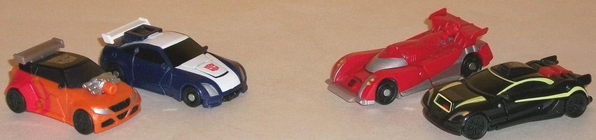
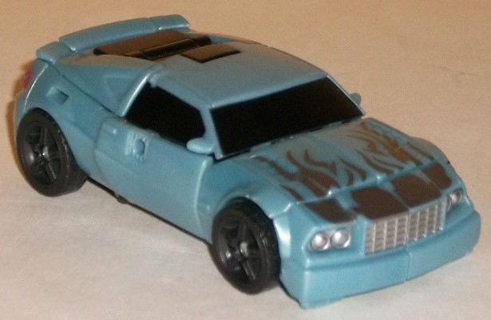
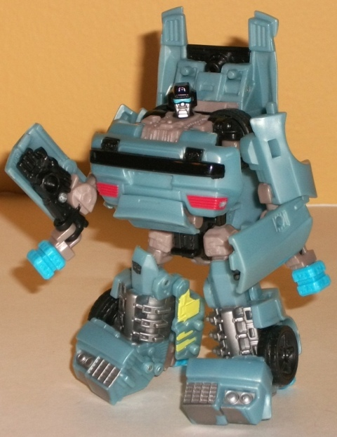
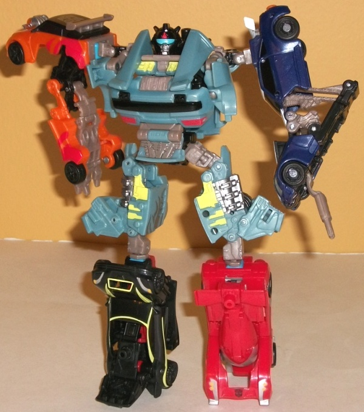

Double
Clutch w/ Rallybots
Double
Clutch w/ Rallybots
Rallybots

Allegiances:
Autobots
Difficulty of Transformations
: Automatic
Color Schemes
: Red, white, black,
dark blue, moderately light orange, light pale milky brown, light milky
brown, and some silver, very dark metallic blue, light pasty orange, and
electric yellow
Individual Rating
: 6.0
All of the Rallybots
are-- you guessed it-- cars designed for racing. I'll start with the dark
blue one. This one probably has the coolest-looking vehicle mode of the
Rallybot limbs, with the proportions being very nice and there being no
real extras (other than the Powerlinx port hanging out the rear). The dark
blue and white color scheme also goes together quite well, though the black
windows don't provide much contast against the dark blue. His headlights
are painted a nice shade of silver, though on the minus side his taillights
aren't painted at all. As an arm, this Rallybot looks really odd-- the
combiner port is on the top of the car, and it makes for an extremely weird-looking
arm with two guns where there should be a hand/claws. (Not to mention the
milky brown plastic just looks kinda ugly.) Given that both of these together
make it almost look like it's on backwards when connected to its combiner
port, it's my least favorite of the limb modes for the Rallybots.
Next up is the smallest
Rallybot, a little orange rally car with an exposed engine. In vehicle
mode this one also looks great-- a TAD squat compared to the other Rallybots,
but it's certainly not a huge issue by any means. There's plenty of paint
apps on this one-- painted dark blue windows and a black roof, which both
go quite well with the light orange that's this guy's dominant color. The
"spiral" red paint apps near the back end also look quite good, and the
silver and black paint detailing on the exposed engine and front bumper/headlights
looks quite good and provides some nice contrast against the orange, too.
The Powerlinx port on the top of the engine does look a little dumb, however.
The combiner port is on the back end of this mode, which means he doesn't
really have any detailing there like taillights. For arm mode, he basically
accordions out to form a servicable--if spindly-- arm. It's my favorite
of the Rallybots' limb modes, but that's not saying much. He also has that
ugly light milky brown in this mode, which just does not go well with these
guys.
Next up is the red race
car Rallybot, which-- again-- looks quite nice in vehicle mode, proportions
and all. Keeping the Powerlinx port on the spoiler and allowing it to fold
down to make it less obvious was a nice move, and the red and silver color
scheme-- while not particularly original-- works quite well. The combiner
port is on the back end of this mode, though he does have molded-in taillights.
(Unfortunately, they're not painted, though this is more forgivable on
this drone because they're already red.) This Rallybot's leg mode tends
to get stuck in mid-transformation, at least for mine, though it does serve
as a decent enough leg. The front half of the vehicle mode folds forward,
while the underside serves as the "heel" and back part of the leg and part
of the top section folds up to become the "knee". The light gray plastic
that is used more obviously in this mode is rather blah, but at least it's
not ugly like the light milky brown plastic on some of the others.
Finally we've got the
black Rallybot, which looks the most aerodynamic and "futuristic-looking"
of the Rallybot limbs. Unfortunately, he's almost all black, with not nearly
enough paint detailing (unlike the other Rallybot limbs). The couple of
electric yellow highlights are quite striking, but there still needed to
be another main color. (The accent colors on the headlights look quite
good, though.) The Powerlinx port is really obvious even when it's folded
down, due to it being red plastic. If visible in greater quantities in
this mode, it would've served as a nice contrast color, but just using
it for the port makes it way more obvious than it should be. This Rallybot's
connector port is underneath the front end of this vehicle, and when plugged
in, the front hood folds forward to form the "knee" while pretty much the
entire underside of the vehicle moves up a bit to become the "heel" and
back of the leg. There really isn't any obvious "foot" to speak of, though--
which makes this the more unstable of the two legs--and just like the other
Rallybot leg, the auto-transformation has a bad habit of catching or coming
off of its combiner port too easily. This one's my least favorite overall
of the Rallybots.
The Rallybots look pretty
decent in their vehicle modes-- particularly the arms-- but only the orange-and-black
one has a decent limb mode. All of the others either look extremely awkward,
can catch during auto-transformation, and/or simply don't transform enough
to begin with. I think that this is definitely the weakest set of limbs
for a Power Core Combiner.
Double
Clutch



Allegiance
: Autobot
Difficulty of Vehicle/Robot Transformation:
Medium
Difficulty of Torso Transformation
:
Medium
Color Scheme
: Dull milky light blue,
black, light milky brown, and some silver, light red, electric yellow,
and light sky blue
Individual Rating
: 5.8
Double Clutch's vehicle
mode is a sportscar. The proportions for this mode are generally quite
good, and there are no robot mode extras to speak of, though some of the
"lines" between different pieces of plastic can be a little distracting
(such as the line across the front of the hood). The dull light blue color
scheme is a bit boring however, and the silver flames don't really contrast
or complement that main color-- they're just... there, really. They can
honestly be easily overlooked. Making the flames in yellow or red really
would've helped to make this mode pop more. The black windows and tires
help a bit with contrast, but... eh. At least he has enough paint apps--
with the exception of the tiny side-rear windows, every necessary detail
is painted, like his taillights (which are a light red) and his headlights.
Double Clutch's robot
mode is hardly something to show off. Quite frankly, it's a mess of panels
and bad proportions. The couple of things I will say that are nice about
this mode are that, firstly, the added bit of electric yellow and light
milky brown help to diversify the color scheme a bit, even if it's still
hardly exciting. The mold detailing on many of his parts is also quite
well-done, too, like the engine bits on his legs. His lower legs in generally
are also pretty good, being chunky and big but not overly so, and the front
halves of the bumper make nice feet. Using two of his combiner ports as
heels was also a good idea, too. That's about all the good things I can
say about this mode. His proportions are ridiculous-- he has a tiny head,
huge chest, a mere flap of plastic for a stomach that collides with his
waist piece, teeny upper legs, combiner ports that stick out painfully
obviously from his elbows, a huge backpack flap that sticks way up above
his shoulders, and overly two-dimensional arms that can hardly move around
without either A. getting in the way of his chest or B. popping off their
ball joints. (...Wow, that was definitely a run-on sentence, there.) For
articulation, Double Clutch can move at the neck, shoulders (at two points),
elbows (at two points), hips, knees (at two points), and slightly at the
ankles. That may not seem too bad, but keep in mind it's hard to move his
arms or waist much without other parts getting in the way, so in practice
his movement is considerably less than that. Just.... eesh.
Double Clutch's torso
mode, sadly, isn't much better. The transformation from robot mode is (theoretically)
quite simple-- turn his legs sideways, pull his head out from his backpack
and bring it over his "normal" head to peg into his chest, and then turn
the arms backwards and peg them into the upper back, folding out the combiner
ports. In the official pics, it looks pretty solid. Unfortunately, it's
anything but, and although this mode may look a little better than his
robot mode, it's even more of a victim of parts crashing into each other
with not enough room to maneuver them. It's a bit hard to get the legs
in the position where they spread out at the hips and then angle downwards
at the knees to serve as the upper legs of the combined form, given how
small his regular robot mode's upper legs are. His head/shoulders piece
also doesn't peg in securely where it should, leading to some floppiness
there. The biggest offender, however, is that it's INCREDIBLY difficult
to get his arms and hands to peg in along his upper back where they should
without popping off of their joints. There simply isn't room for the pieces
to maneuver that way easily; it's too much of a stretch for the limbs,
literally. You can just forgo this frustration by popping off the arms
at the elbows and then pegging them in where they should go, but this makes
the combiner arms considerably more unstable, considering they've only
got one peg each holding them to the main torso. As for his Powerlinx port,
it's on his upper back, amidst a bunch of other panels-- don't expect to
get a Minicon on that thing and have it look anything but ridiculous. On
the plus side, his combined mode head is a pretty nice sculpt-- nice visor,
nice horns... As for articlation in this mode, he can move at the neck,
shoulders (at two points), hips (at two points), and knees (at two points)--
standard for a Power Core Combiner.
Double Clutch may have
a good vehicle mode, but just like most of the Rallybots, he's a mess in
any other mode. His robot mode looks ridiculous and has tons of kibble,
and his torso mode is unstable and parts of the design simply don't work.
If you're going to skip one Power Core Combiner set, make it this one--
he's a perfect example of all the possible limiations of this line rolled
up into one little sad toy.
Double Clutch w/ Rallybots Bio
:
Double Clutch has always been a master
of diversionary tactics. His entire team is built around the idea of confusing
and disrupting Decepticon operations. The speed and noise of the Rallybots
alone is enough to strain any robot's sensors. Add to that all the electronic
countermeasures built into the team, and the Rallybots become the single
greatest threat to Decepticon strategy.
Strength: 6.0
Intelligence: 8.0
Speed: 9.0
Endurance: 6.0
Rank: 7.0
Courage: 9.0
Fireblast: 6.0
Skill: 8.0
Reviews by Beastbot
Back to Power
Core Combiners Index